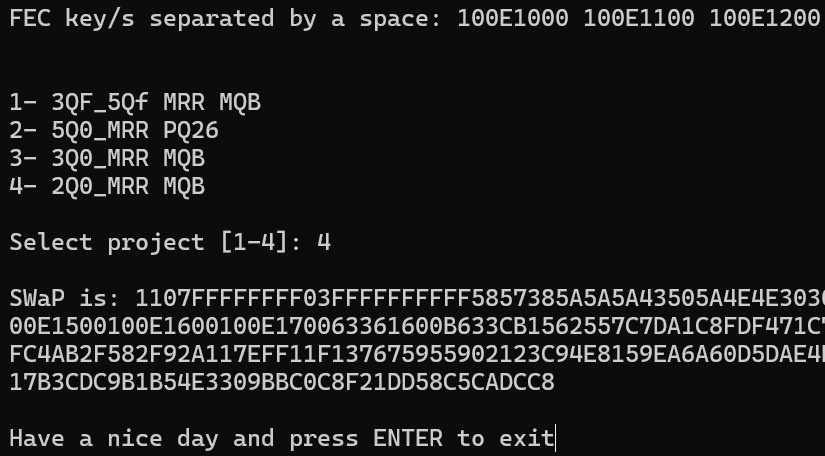
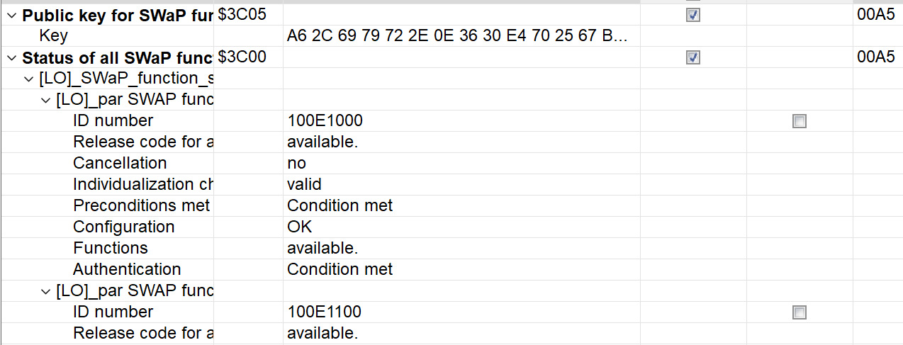

SWaP для камеры 2Q0980653 (MFK 3.0)¶
Полная инструкция по разблокировке SWaP на фронтальной камере ассистентов 2Q0980653× (классический MQB, MFK 3.0).
После процедуры можно генерировать и вводить свои SWaP-коды (Sign Assist, aLDW и др.) — по той же логике, что для радара ACC / pACC.
Все действия — на свой страх и риск. Неверная прошивка или параметрия могут «окирпичить» камеру или дать ошибки Dataset Implausible.
Инструкция не подходит для камер 5WA 980 653 (MQB-Evo) — см. Travel Assist MQB-Evo.
Источники
Готовые файлы прошивки — архив A5_2Q0_SWaP_Solution на mibsolution.one (MQB_Solution → pACC → A5_2Q0_SWaP_Solution, логин guest / guest).
Что такое SWaP на камере¶
SWaP — подписанный код (RSA), привязанный к VIN, VCRN блока и списку FEC. Заводские коды подписаны ключом VW.
Чтобы генерировать коды самостоятельно, в EEPROM камеры подменяют публичный ключ через специальную прошивку. После смены ключа используется тот же генератор, что для 2Q0-радара (A6 2C 69 …).
Кодирование Lane Assist, FLA и т.д. после SWaP — в Кодирование 2Q* камеры.
FEC-коды камеры 2Q0¶
| FEC | Назначение |
|---|---|
100E0F00 |
Sign Assist (VZE / TSR) |
100E1000 |
Улучшенное ведение по полосе (aLDW) |
100E1100–100E1500 |
Зарезервированы (навигация) |
100E1600 |
Распознавание предметов на пути |
100E1700 |
Распознавание пешеходов (FCPW) |
Максимальный набор для генератора (через пробел):
100E0F00 100E1000 100E1100 100E1200 100E1300 100E1400 100E1500 100E1600 100E1700
Что понадобится¶
| Блок | A5 / 00A5, камера 2Q0980653 (буква D/J/… — сверяйте SW) |
| ПО | ODIS Service (онлайн, снятие CP), ODIS Engineering 17–18 |
| Адаптер | VAS6154A / VNCI (для прошивки предпочтителен «серый» 6154) |
| Состояние | Камера в Component Protection (CP), стоковая прошивка и стоковый dataset |
| Генератор | accGenerator.zip — afcg.exe, FecCalc.py (как для радара) |
Перед прошивкой верните стоковую параметрию, если заливали кастомную. Иначе после SWaP часто остаётся Dataset Implausible и не работает VZE.
Общая схема¶
flowchart TD
A[Камера в CP + сток SW/dataset] --> B[Прошивка PART1 / mod block 02]
B --> C[Прошивка PART2 / block 04]
C --> D[Снятие CP через ODIS Service Online]
D --> E{Public Key A6 2C 69…?}
E -->|да| F[Генерация SWaP: VIN + VCRN + FEC]
E -->|нет| B
F --> G[007 Transfer SWaP + 005 Activate SWaP]
G --> H[003 Status: available / valid]
H --> I[Параметрия + кодирование A5/44/5F…]Подмена публичного ключа SWaP¶
Два способа установить свой публичный ключ (A6 2C 69 …). Дальнейшие шаги (генерация SWaP, активация, кодирование) для обоих одинаковы.
Архив A5_2Q0_SWaP_Solution на mibsolution.one содержит для каждой версии SW два файла:
| Файл | Содержимое |
|---|---|
2Q0980653*_PART1.odx-f |
Модифицированный блок 02 (свой публичный ключ) |
2Q0980653*_PART2.odx-f |
Блок 04 — вывод камеры из режима программирования |
На том же ресурсе также есть готовые модифицированные прошивки всех версий (см. UPD в посте на Drive2).
Шаг 1. Подготовка¶
- Установите камеру, подключите CAN (Extended + при необходимости Local к радару).
- Сделайте backup кодировок/адаптаций A5 (ODIS E → 046 или экспорт вручную).
- Убедитесь: прошивка и dataset заводские.
- Переведите блок 00A5 в Component Protection — при первой установке «чужой» камеры это происходит при адаптации оборудования в ODIS Service до SWaP.
Шаг 2. Прошивка (ODIS Engineering)¶
Блок A5 → 042 — Прошивка:
- Прошить
…PART1.odx-fпод вашу букву/SW.
Процесс завершится ошибкой — блок 02 ждёт подпись. Камера «зависнет» в programming mode. Это нормально. - Сразу прошить
…PART2.odx-f.
Камера должна вернуться в рабочее состояние.
Порядок PART1 → PART2 обязателен. Не прерывайте питание между шагами. Прошивка может занять 40+ минут (6154).
Шаг 3. Снять Component Protection¶
ODIS Service, онлайн-доступ (GeKo / UMA):
- Снять CP с блока A5.
- Если Service не видит CP — выберите модель, на которую такая камера ставилась с завода (например VW Polo GTI AW1), как в подробном посте.
Шаг 4. Проверить публичный ключ¶
A5 → 003 — Измеряемые величины → SWaP Public Key…
Должен начинаться с A6 2C 69 … (как у 2Q0-радара в pACC).
Если ключ уже A6 2C 69 … — прошивку можно пропустить и перейти к генерации SWaP.
Если нет PART1/PART2 с mibsolution.one — логика из короткого поста на Drive2.
1. Подготовить прошивку¶
- Взять .odx-f прошивку камеры (распаковать ZIP, как параметрию).
- В программном блоке 02 заменить публичный ключ RSA на свой — обычно берут ключ 2Q0-радара (
A6 2C 69 …из accGenerator.zip). - Собрать файл обратно.
2. Прошить при активной CP¶
- Камера обязательно в CP.
- ODIS E → 042 → прошивка модифицированного файла.
- Блок 02 заливается без валидной подписи → ошибка, programming mode — ожидаемо.
- Допрошить другой блок (например 04) из той же прошивки — процесс завершится.
Порядок блоков можно подбирать; главное — изменённый 02 должен попасть в камеру.
3. Снять CP и проверить ключ¶
Как способ A — шаг 3 и шаг 4 (снятие CP в ODIS Service, затем проверка SWaP Public Key в измеряемых величинах).
Генерация SWaP-кода¶
Нужны три значения:
| Параметр | Где взять |
|---|---|
| VIN | Автомобиль |
| VCRN | A5 → 003 → Индивидуализирующий признак |
| FEC | Таблица выше |
Генераторы (из accGenerator.zip):
python FecCalc.py
- VIN
- VCRN
- FEC через пробел
- Проект
4— строка2Q0_MRR MQB

Ввод и активация SWaP (ODIS Engineering)¶
Блок A5:
009 — Диагностический сеанс → Режим при сходе с конвейера (EOL)
008 — Право доступа → 20103
007 — Адаптация → Передача кода разблокировки функции SWaP → вставить сгенерированный код
005 — Базовая установка → Активация функции SWaP / Unlock SWaP Feature
003 — Измеряемые величины → Статус всех функций SWaP

Успех: для каждого FEC — available, valid, condition met (доступн. / действ. / условие выполнено).
Та же последовательность для радара 13 — см. pACC, шаг 8.
После SWaP¶
- Калибровка камеры (если требуется после установки) — см. Калибровка 3Q* по аналогии и документацию ODIS.
- Заливка подходящей параметрии — Прошивки камеры.
- Кодирование A5, 44, 5F, 17, 09, 19 — Кодирование 2Q* камеры.
TJA и часть функций требуют параметрию, а не только SWaP. Sign Assist (VZE) — в первую очередь SWaP + кодирование.
Ограничения¶
| Тема | Комментарий |
|---|---|
| Прошивки G / H | Публичный ключ RSA3072 (длиннее), другая логика заливки блоков — метод может не работать без отдельного решения |
| MQB-Evo 5WA 980 653 | Другая камера и SW — эта страница не применима |
| SFD / SFD2 | На классическом MQB для 2Q0 обычно не требуется; на новых авто уточняйте отдельно |
| Dataset | Только проверенные параметрии; «левые» XML из редакторов часто ломают VZE |
См. также¶
- Кодирование 2Q* камеры — FEC-таблица и кодировки ассистентов
- Активация ACC и pACC (SWaP радара) — общая теория SWaP и
afcg.exe - Прошивки и параметрия A5
- Инструкция ODIS E — меню 005, 007, 042